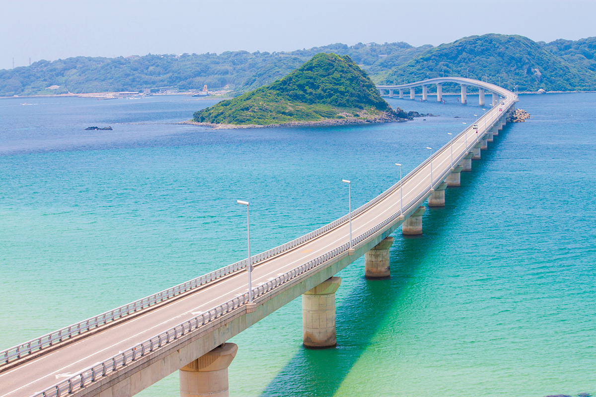
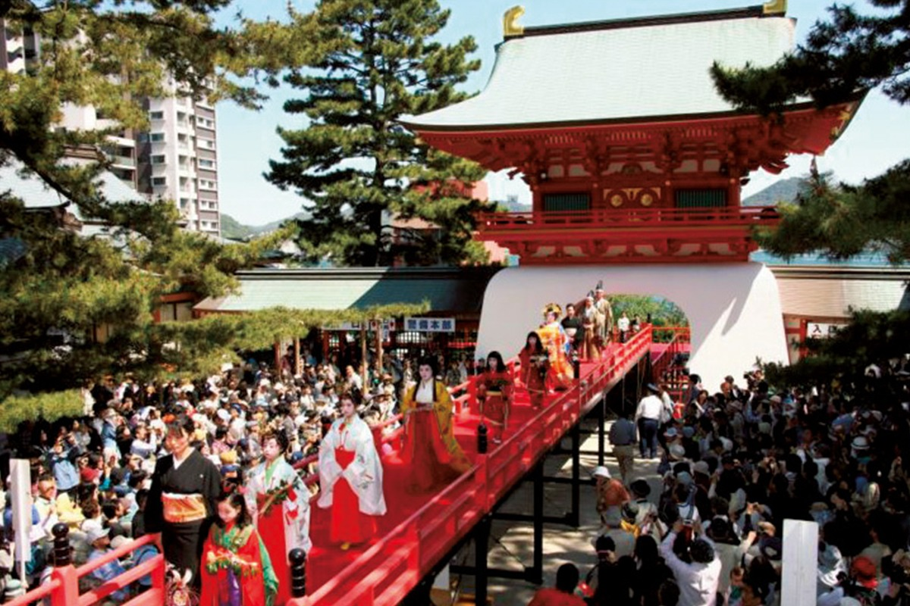
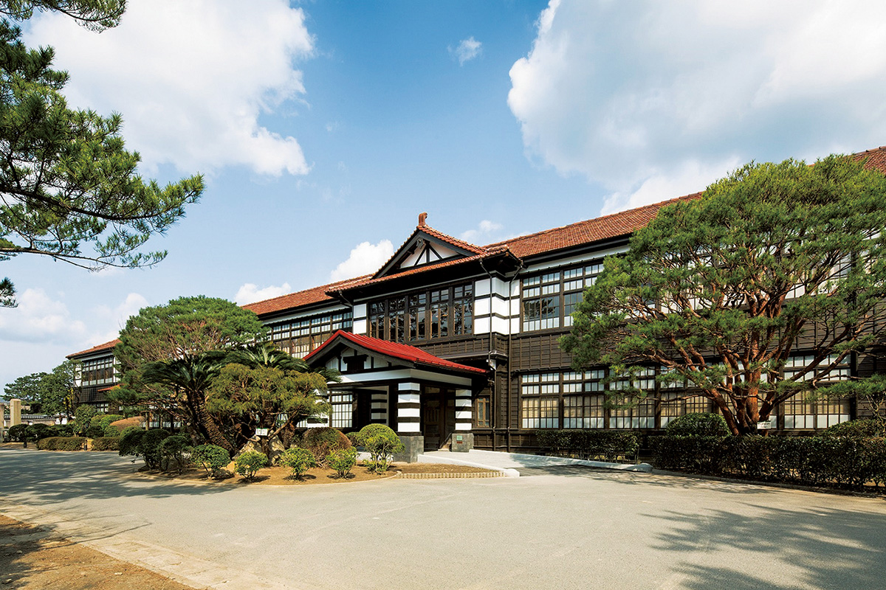
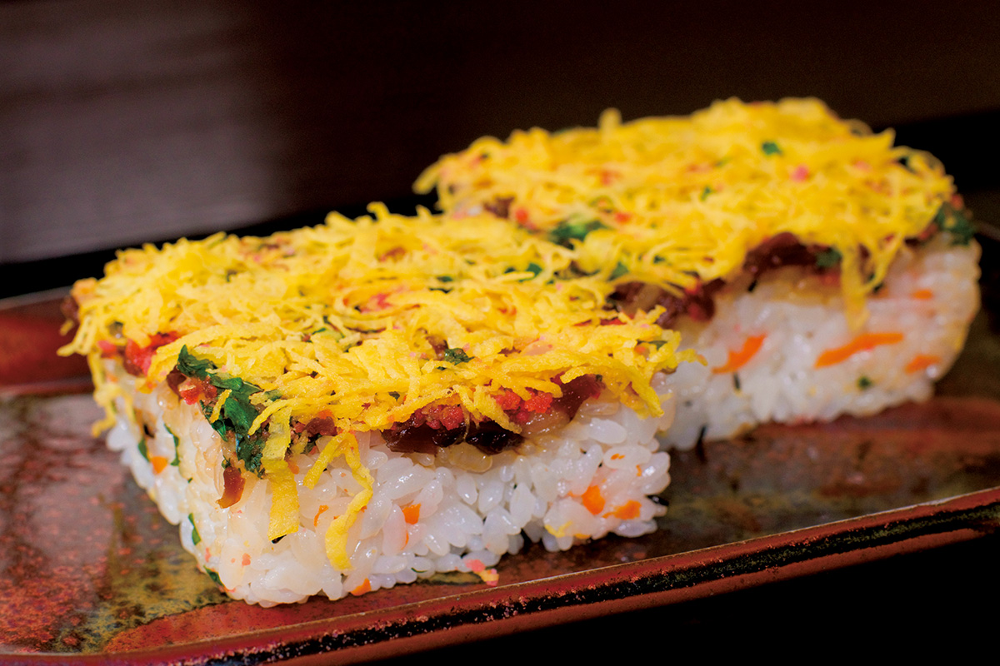
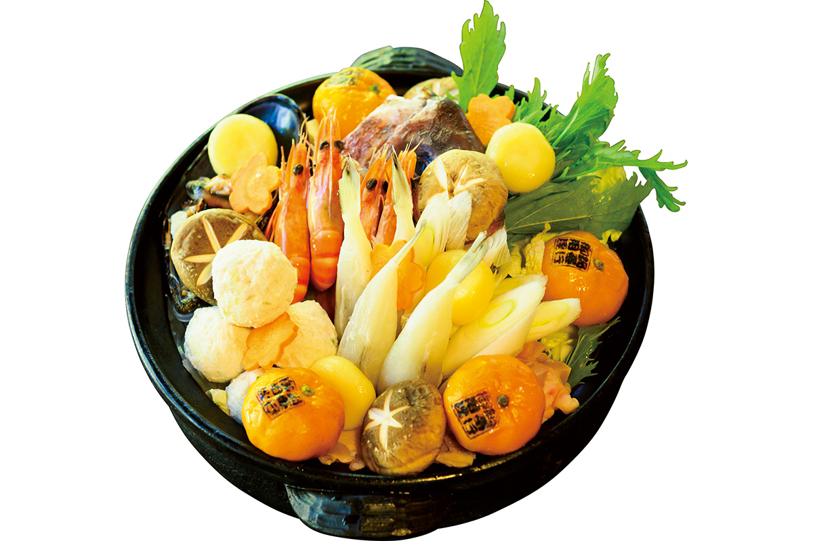
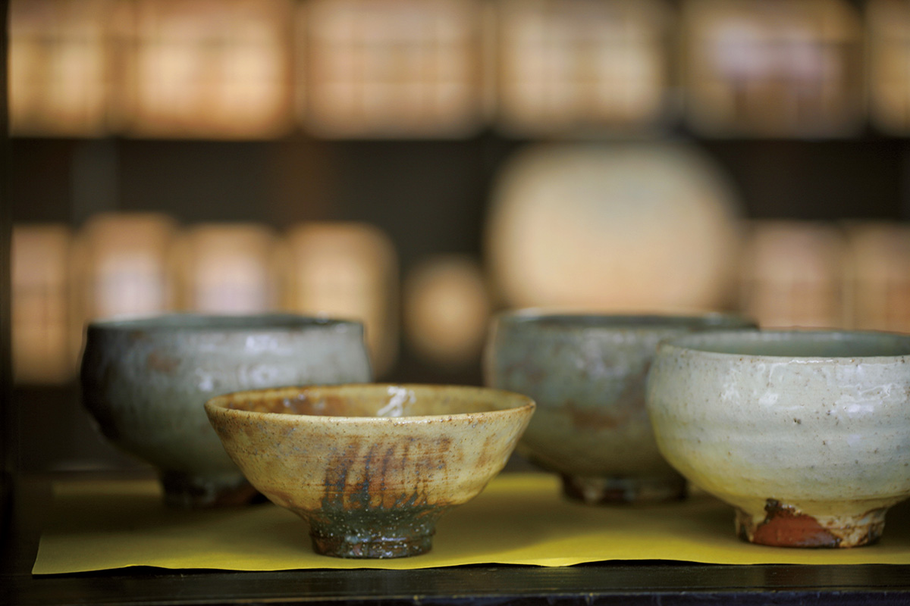
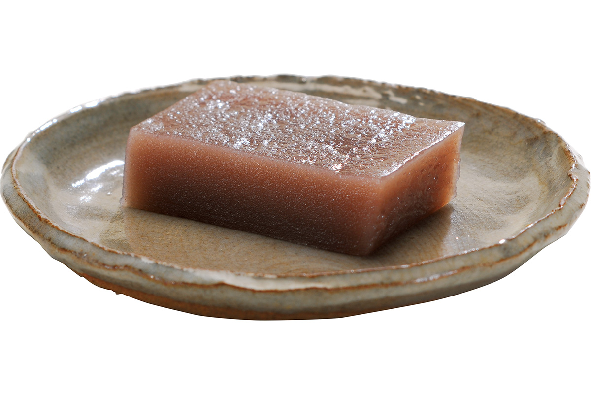
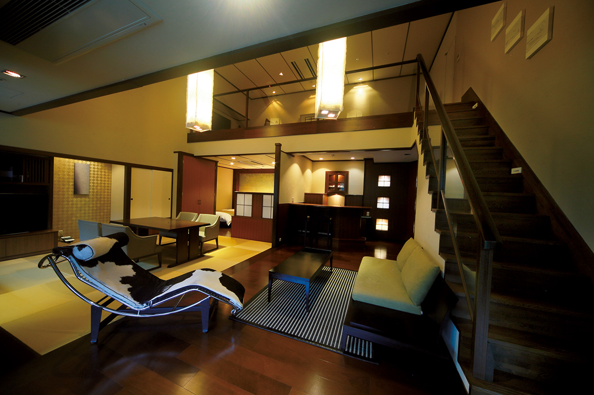

Префектура Ямагути
Ямагути: мост над бирюзой и обновлённый курорт

Белый мост идёт дугой над бирюзовой водой к зелёному острову
Мост над бирюзовой водой, пролив, где решалась судьба страны, керамика, которая красиво старится, и курортный квартал, который за последние годы перестроили заново. Рассказываем, за чем ехать в префектуру Ямагути.
Карта: 61 место из 19 статей · все статьи о Ямагути
Карта
Ямагути на карте
61 место из наших статей о Ямагути: старый город Хаги и герои Мэйдзи, плато Акиёсидай, мост Цуносима, онсэн Нагато-Юмото, Симоносэки, остров Суо-Осима, фестиваль фонарей в Ямагути. Нажмите на точку, чтобы открыть статью.
Пунктирный круг означает, что точка примерная: место находится в этом районе или на этом острове.
О префектуре
Самый западный берег Хонсю
Ямагути занимает западную оконечность острова Хонсю, и береговая линия тянется здесь почти на 1500 километров. На юге плещется тихое Внутреннее море с россыпью островов, на севере шумит Японское море с обрывистыми берегами, поэтому картины на севере и на юге префектуры совсем не похожи.
Издавна эти места были узлом морских путей между Кюсю и Хонсю и сценой, на которой несколько раз менялся ход японской истории. После битвы при Сэкигахаре, в 1604 году, Мори Тэрумото (1553–1625), крупный полководец запада страны, построил замок в Хаги и получил во владение две провинции, Суо и Нагато, которые вместе стали называть княжеством Тёсю.
Из Тёсю вышли деятели, которые к концу эпохи Эдо, то есть к середине XIX века, свергли сёгунат и провели реформы Мэйдзи: Ёсида Сёин (1830–1859), мыслитель и наставник; Такасуги Синсаку (1839–1867), военный организатор; Кидо Такаёси (1833–1877), политик; Ито Хиробуми (1841–1909), первый премьер-министр страны.
Название префектуры объясняют по-разному, но чаще всего говорят, что так называли вход в горную дорогу, которая ведёт в провинцию Нагато, либо вход в рудник: такое имя дали сами жители окрестных деревень. Ещё одна перемена происходит здесь сегодня: в марте 2020 года город Нагато и компания Хосино Ризорт закончили проект обновления курортного квартала Нагато-Юмото, и теперь это место снова ждут туристы.
Что посмотреть
Мост над бирюзовой водой
Мост Цуносима
Мост открыли 3 ноября 2000 года. Он идёт над водой яркого бирюзового цвета, и белые пролёты над ней смотрятся как картинка: неудивительно, что здесь снимали фильмы и рекламу.
- Адрес
- от Канада, Тоёхо-тё, Симоносеки до острова Цуносима, Ямагути
- Справки
- отдел туризма города Симоносеки
- Телефон
- +81 83-231-1350
Что ещё посмотреть
- Святилище Мотоносуми на скалистом берегу Японского моря
- Плато Акиёсидай, карстовое плато с обнажениями известняка
- Мост Кинтай, деревянный мост с пятью арочными пролётами
Праздники
Праздник в проливе Симоносеки
Праздник пролива Симоносеки
Это один из трёх главных праздников города. Здесь устраивают шествие в память об императоре Антоку (1178–1185), который ребёнком погиб в проливе во время битвы при Данноура 1185 года, и шествие воинов двух соперничавших домов, Минамото и Тайра, в исторических костюмах.

- Когда
- ежегодно со 2 по 4 мая
- Место
- район Амидайдзи-тё, город Симоносеки, у святилища Акама и на других площадках
Другие праздники
- Выжигание сухой травы на плато Акиёсидай, когда склоны ненадолго загораются
- Праздник фонариков в виде золотых рыбок в Янаи
- Шествие святилища Хофу Тэммангу
Музеи и архитектура
Школа, которая стала музеем
Мэйрин гакуся в Хаги
Здесь сохранили деревянное здание начальной школы, и теперь это центр для туристов города Хаги. В залах показывают вещи людей, которые в середине XIX века готовили свержение сёгуната.

- Адрес
- 602 Emyo, Hagi, Yamaguchi
- Телефон
- +81 838-21-0304
Что ещё посмотреть
- Художественный музей Хаги при префектуре
- Мемориальный музей Ураками с собранием керамики
- Музей Кумагая
Местная кухня
Прессованное суши размером с праздник
Ивакуни-суши
Это прессованное суши, для которого берут сразу четыре или пять сё риса: сё это старая мера объёма, около 1,8 литра, так что короб получается очень большим. Рис и начинку укладывают слоями. Блюдо зовут ещё суши для господ: без него здесь не обходится ни один праздничный стол.

Что ещё попробовать
- Фугу, рыбу, которую здесь готовят с особыми предосторожностями
- Кавара-соба, лапшу, которую подают на нагретой черепице
- Кэнтё, густое блюдо из тофу и овощей
Где поесть
Зимний горшочек с мандарином
О-самурай-дзяя Хикоэмон, главный дом на острове Осима
Зимой здесь подают мандариновый горшок: в бульоне плавает целый поджаренный мандарин, и выглядит это очень эффектно. Рецепт родился на острове, где растят мандарины, и в него вложена вся местная любовь к этому фрукту.

- Адрес
- 1094-1 Doi, Suo-Oshima-cho, Oshima-gun, Yamaguchi
- Телефон
- +81 820-73-1511
- Часы
- с 11:00 до 22:00 (последний заказ в 21:00)
- Выходной
- четверг
Ремёсла
Керамика, которая стареет красиво
Керамика Хагияки
Хагияки это традиционное ремесло префектуры, которое выросло из корейской техники обжига, привезённой с полуострова. Посуда не боится частого использования: чем дольше ею пользуются, тем интереснее становится её цвет.

- Справки
- дом керамики Хагияки
- Телефон
- +81 838-25-9545
Что привезти
Сладость из папоротникового крахмала
Нама-уйро от Микоридо
Эту сладость в Ямагути знают со времён рода Оути, могущественного дома, что правил здешними землями в XV и XVI веках. Её делают на папоротниковом крахмале, и за необычную мягкость текстуру издавна называют неторопливой.

- Цена
- 130 иен
- Телефон
- +81 120-601-106
- Сайт
- mihorido.com
Где остановиться
Современный подход к древнему лечению водами
Бэттэй Отосурэ
Отель вырос из постоялого двора, где когда-то просто лечились водами источника, и теперь старое и новое соединены в одном пространстве. Номера оформлены сдержанно и дорого, так что сегодняшний отдых на водах выглядит именно так.

- Адрес
- 2208 Fukagawa Yumoto, Nagato, Yamaguchi
- Телефон
- +81 837-25-3377
- Номеров
- 18
- Цена
- от 41 190 иен за сутки с завтраком и ужином, налог и сервисный сбор включены
- Сайт
- otozure.jp
Нагато меняется и дальше: здесь по-прежнему работает гостиница Отаниямасо, которой больше 120 лет, открылся новый отель сети «Кай» от Хосино Ризорт, а общественную купальню Онъю вместе с другими зданиями квартала обновили. Обновление идёт совместно с городом, поэтому Нагато-Юмото сегодня называют одним из самых быстро меняющихся курортов страны: гулять по его улицам интересно именно из-за соседства старого и нового.
Местный диалект
Как здесь хвалят еду и говорят «заходите»
- Бути умай нэОчень вкусно
- ОйдэмасэЗаходите, добро пожаловать
- Маццуй дзяаОдин в один, точь-в-точь
- Ёокэ моттёру нэМного у тебя всего, да?
Рекорды
Первые в стране по рыбе, дороге и названиям
- №1 по вылову белого морского леща
- №1 по длине частной дороги: это подъездная дорога завода в Убэ
- №1 по числу населённых пунктов, в названии которых есть первый знак девиза Рэйва, то есть девиза правления, объявленного в 2019 году
Вопросы и ответы
Два вопроса о Ямагути
Где в префектуре находится самое большое карстовое плато Японии?
Это Акиёсидай в городе Минэ, часть одноимённого квазинационального парка площадью 4502 гектара. Под плато лежат пещеры, в том числе Акиёсюдо, которая объявлена особым памятником природы страны.
Какой местный деликатес был под запретом в эпоху Эдо?
Фугу. Смертельных отравлений было так много, что вышел указ, запрещавший есть эту рыбу. Запрет сняли в 1888 году, и поводом стало восхищение Ито Хиробуми, который попробовал фугу во время поездки в Симоносеки.
Справочник
Ямагути в цифрах
Общие данные
| Административный центр | Ямагути |
| Муниципалитеты | 13 городов и 6 посёлков |
| Площадь | 6113 км² |
| Население | 1,37 млн человек |
| Плотность населения | 224,1 чел./км² |
| Туристов в год | 5,83 млн |
| Символ-дерево | красная сосна |
| Символ-цветок | цветы летнего мандарина |
| Символ-птица | японский журавль |
Климат
| Средняя годовая температура | 16,0 °C |
| Средний максимум | 35,2 °C |
| Средний минимум | -0,9 °C |
| Осадки | 1940 мм в год |
| Ясных дней | 34 |
| Дней с осадками | 108 |
| Дней со снегом | 47 |
Для путешественника
| Горячих источников | 47 |
| Отелей и рёканов | 716 |
| Художественных музеев | 11 |
| Музеев | 51 |
| Придорожных станций митиноэки | 24 |
| Объектов культурного наследия | 136, из них 10 национальных сокровищ |
| Национальные сокровища | зал храма Кодзан-дзи, главный зал святилища Сумиёси и другие |
| Исторических памятников | 43 |
| Живописных мест | 12 |
| Памятников природы | 40 |
| Всемирное наследие | объекты промышленной революции эпохи Мэйдзи: металлургия, судостроение и угольная отрасль |
| Национальные и квазинациональные парки | Внутреннее море, Акиёсидай, северное побережье Нагато, горы западного Тюгоку, всего 4 |
Природные памятники
Светлячок гэндзи-ботару, белая змея из Ивакуни, грот Иваи-каннон, роща на острове Кандзю, место разведения крупного рогатого скота на острове Мисима и другие.
Префектура заботится и об окружающей среде: по доле переработанного мусора Ямагути первая в стране, а по выбросам углекислого газа на человека занимает второе место среди регионов, то есть относится к самым чистым.
Наши статьи
Все статьи о Ямагути
Хаги и история
Природа
Нагато и онсэны
- Баня «Онто» в Нагато-Юмото: шесть веков у реки
- Нагато-Юмото сегодня: отель у реки, пивоварня и фестиваль огней
- Босые ноги по татами и матча у реки: рёкан «Отанисансо» и корпус «Отодзурэ»
- Отель «Ёкикан»: двадцать два часа над заливом Юя
- Морепродукты Нагато: ежи от ныряльщицы, сушёная рыба и камабоко из Сэнсаки
- Якитори Нагато: город, где курицу жарят с двух часов дня